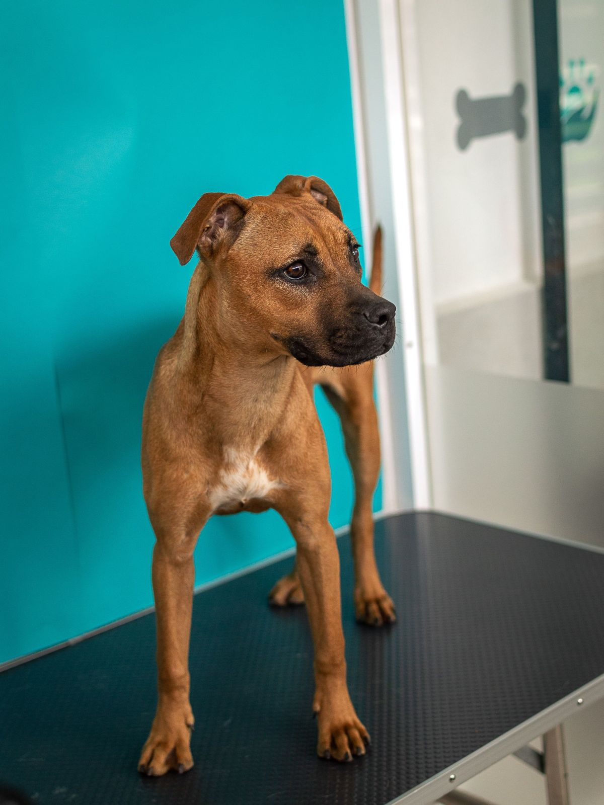
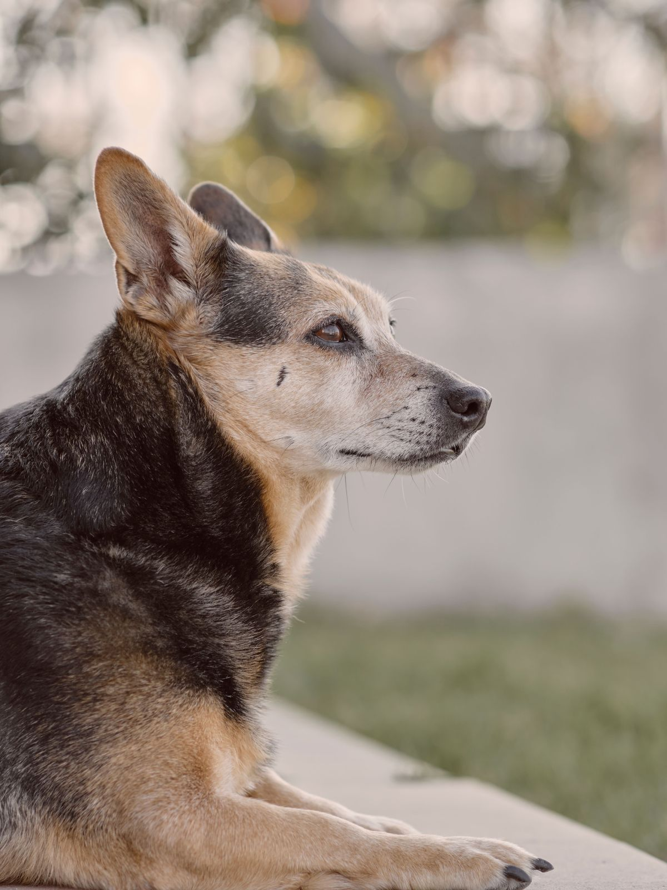
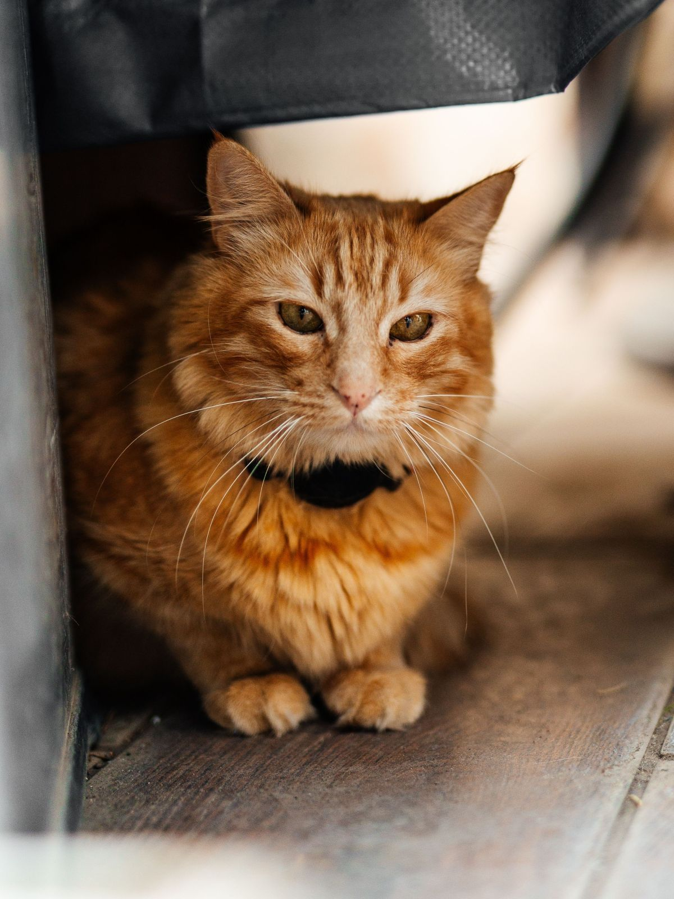
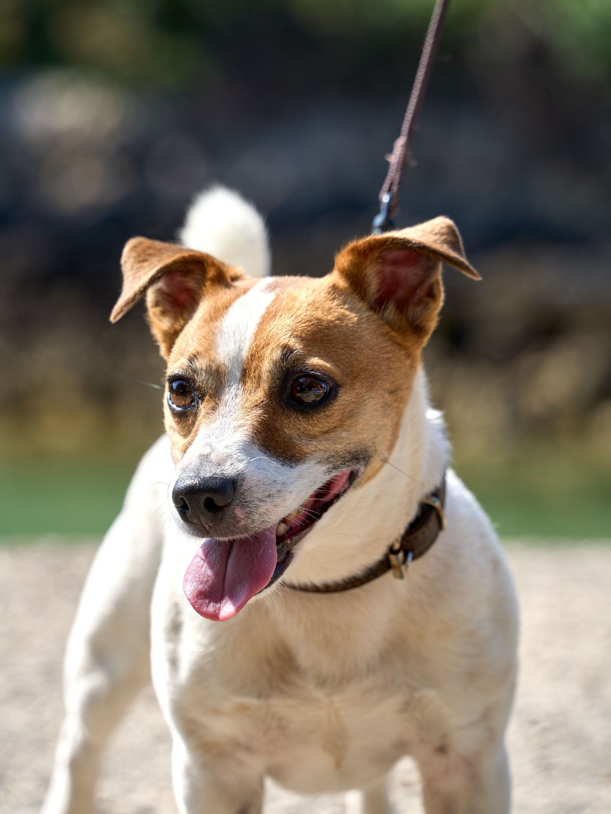
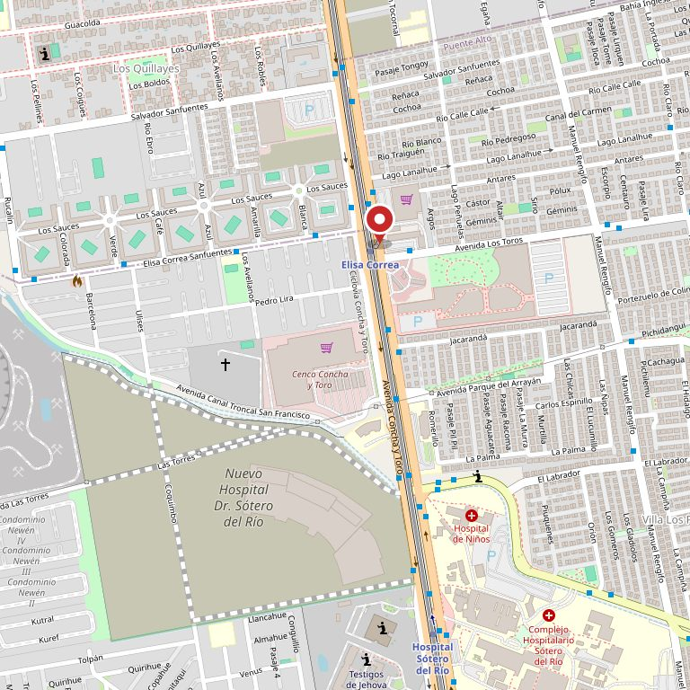

Puente Alto · 504 reseñas
Consultas, vacunas, desparasitación, radiografías, ecografías, cirugías y peluquería. Acá está lo que hacen, a qué hora atienden y qué conviene llevar la primera vez.
504
reseñas en Google, verificadas el 27-08-2026. No mostramos la nota: acá pesa el volumen
4 h
de atención al día, de 10:00 a 14:00, de lunes a sábado. Esa ventana corta es justo lo que hay que decir antes de que alguien llegue a las cinco de la tarde
10
servicios publicados en su agenda en línea, y ninguno aparece cuando uno busca en Google
0
páginas propias. La agenda vive dentro de AgendaPro, junto a las otras veterinarias
La pregunta antes de venir
Sí. Ya tienen agenda en línea, y además contestan por WhatsApp. Lo que falta es que eso se vea desde afuera, y que junto a la hora venga lo otro: qué llevar la primera vez.
Lo otro que nadie escribe
Acá no hay dosis, remedios ni diagnósticos, y no los va a haber: eso lo dice el veterinario con el animal delante. Esta página sirve para llegar hasta él con la información ordenada.
Lo que hacen
Ésta no es una lista de ejemplo: son los servicios que ellos mismos publican en su agenda en línea, leídos el 11-09-2026. Lo único que falta es que estén donde la gente busca.
Las descripciones de cada servicio las escribimos nosotros para que se entiendan; los servicios son los suyos. Lo que sí falta confirmar con la clínica son los detalles de cada uno, y no hay precios a propósito: los que aparecen en su agenda cambian, y publicarlos acá sería congelarlos.
Quién atiende
Esta sección está a propósito vacía de nombres. Quinientas cuatro personas volvieron a escribir sobre la atención que recibieron, y esa atención tiene cara: la de quien atendió. Con dos fotos y dos líneas por persona, esta parte de la página se vuelve la que más se lee.
Médico veterinario · qué atiende
Médico veterinario · qué atiende
Peluquería · quién la hace
No inventamos nombres ni títulos. Los huecos quedan marcados para que se vea exactamente qué falta y cuánto cambia la página cuando esté.
«Quinientas cuatro personas contaron cómo los atendieron.
Ninguna de esas opiniones lleva a una página de ustedes.»
Sin alarmismo
La mayoría de las consultas esperan al otro día sin problema. Estas cuatro, no. No es una lista médica ni reemplaza a nadie: es para saber cuándo hay que moverse de inmediato.
Acá no se receta nada. No damos dosis, no nombramos remedios y no decimos qué darle en la casa: eso es exactamente lo que no se puede hacer por escrito. Fuera de las 10:00 a 14:00 esta clínica está cerrada, así que si pasa de noche o un domingo hay que ir a una urgencia veterinaria que atienda a esa hora. Ellos pueden decir cuál recomiendan.




Estas fotos son de bancos de uso libre y no son de la clínica ni de sus pacientes. Están para que se vea de qué habla la página. Las de verdad las tienen ellos, y en una veterinaria las fotos de los pacientes son el mejor contenido que existe.
Escribir
Con eso alcanza para que le digan si conviene traerlo hoy o pedir hora. El número es el de su ficha de Google y es celular, así que recibe WhatsApp.

Para el dueño
Una propuesta de sitio web hecha por nuestra cuenta. La clínica no la encargó ni la ha revisado. La dirección, el horario y los diez servicios los leímos el 11-09-2026 en su propio perfil público de AgendaPro; las 504 reseñas y el celular, en su ficha de Google.
Ya tienen reserva en línea y funciona. El problema no es ése: es que vive dentro de un buscador donde también están las otras veterinarias de la comuna, y no aparece cuando alguien escribe «veterinaria Puente Alto» en Google. Esta página no la reemplaza, le pone una puerta de entrada propia y enlaza a la suya.
El equipo con nombre y cara, y fotos de la clínica. Los huecos están marcados con línea punteada. No hay precios, dosis ni remedios a propósito: los valores los publica su agenda y cambian, y lo otro no se dice por escrito.